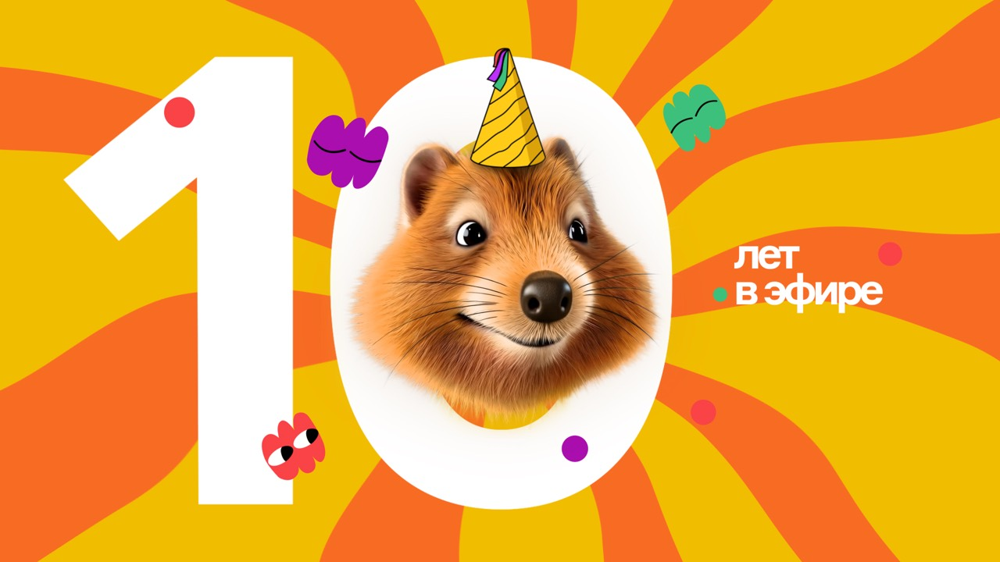
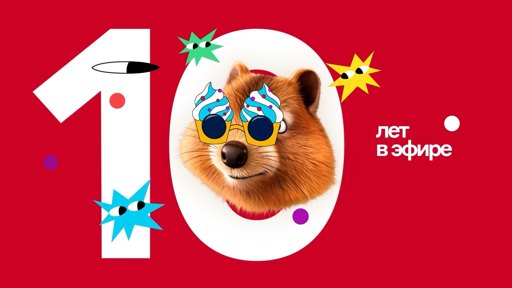
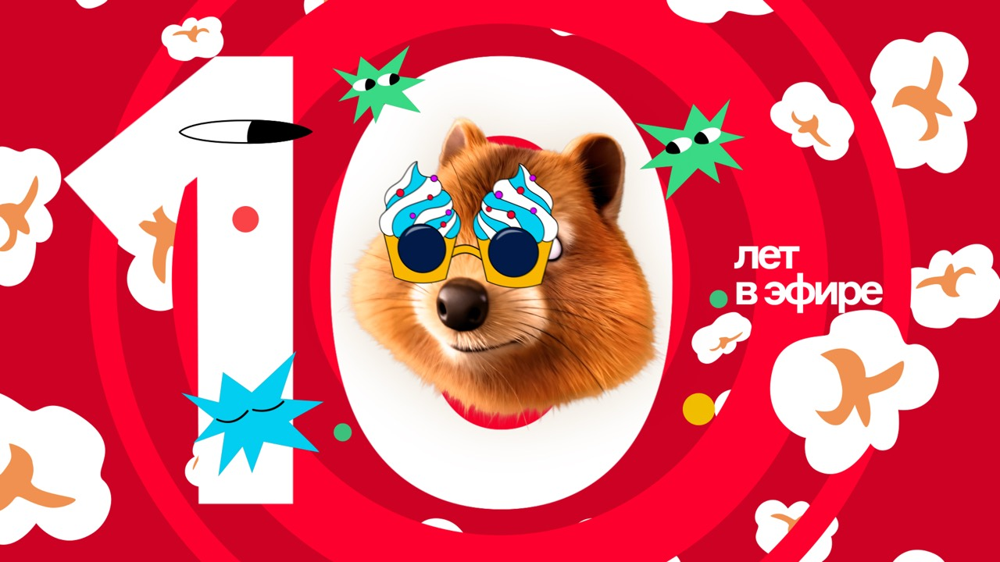
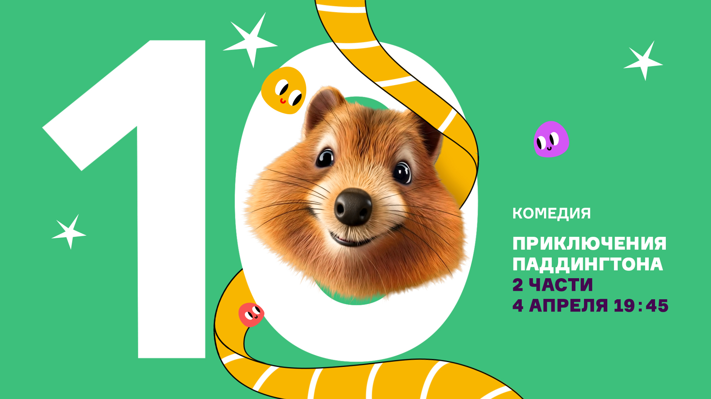

Телеканал «Комедия» · 2025
Квокка снова в эфире: юбилейное оформление «Комедии»
К десятилетию телеканала «Комедия» мы разработали серию телевизионных заставок и элементы оформления эфира с бренд-персонажем анимоджи квоккой.

К десятилетию телеканала «Комедия» разработала серию ID-роликов и праздничное эфирное оформление. В проекте объединили CG графику, ручную иллюстрацию, покадровую анимацию и ИИ генерацию.Главным героем снова стала квокка — персонаж, которого мы создали для канала еще в 2023 году. Для юбилейного проекта её образ развили с помощью ИИ, а затем доработали вручную, чтобы сохранить характерные черты персонажа и встроить его в эфирную графику.


